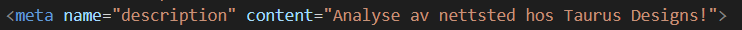
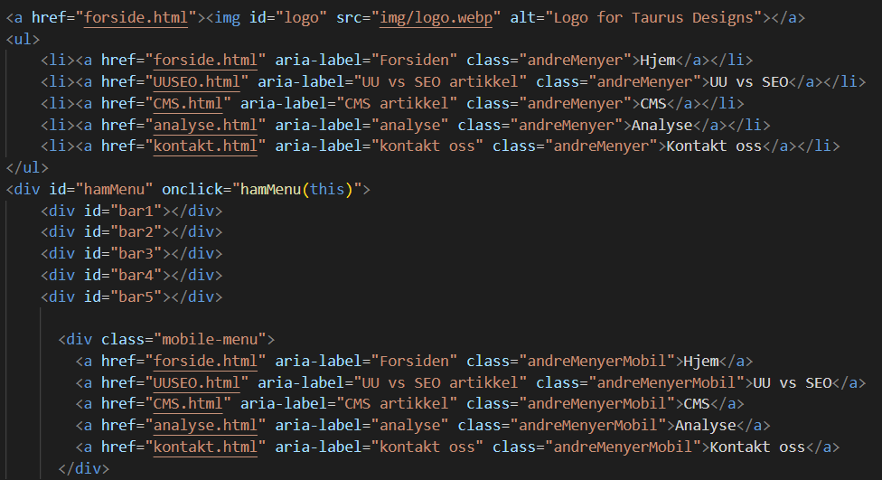

Analyse av nettsted
Nettsiden er veldig enkel, logisk og det er ingen kompliserte koder som kan skape "feller" som er vanskelig å komme ut av. Vurderingen av nettsiden er derfor for det meste teknisk. Etter å ha kjørt sidene igjennom validator på https://validator.w3.org/ og igjennom en test på lighthouse så valgte jeg å gjøre følgende endringer på nettsiden for å forbedre ytelse og brukervennlighet.
Lighthouse
Jeg har endret alle bildene fra png til webp for bedre kompresjon og webside hastighet. Performance på forside var 61% med .png, men ble til 91% med .webp. Jeg valgte å bare endre filtypen og ikke nedskalere bildene siden flere og flere har high resolution skjermer som får større fordel av bedre kvalitet bilder enn å spare noen millisekunder på å laste inn nettsiden. Jeg la også til aria-label`s, meta name description og title på deling og følge knapper for å få opp scoren på accessability. Accessability når ikke fullt 100% fordi lighthouse ikke liker måten jeg har strukterert h1, h2, h3 OSV sin rekkefølge. Men jeg valgte å ignorere dette siden jeg synes nettsiden ble visuel bedre på måten jeg satt den opp.


På UU vs SEO og CMS la jeg til meta name description for å få SEO score opp fra 80% til 90%. Siste 10% er fordi linkene ikke er crawlable, men dette er fordi vi hoster nettsidene fra skoleservere som ikke er offentlig. Her så gikk også performance opp fordi jeg endret bildene på logo og forsidebilde fra.png til .webp. Accesability gikk opp fra 89% til til 100% etter jeg endret fargene på kildelinker til en dypere grå/svart så kontraster mellom tekst og bakgrunn alltid er innen kravene. Og etter jeg ga linkene til deleknappene og følgeknappene en aria-label og title.
Siden analyse nettsiden ble laget for deleksamen 4 så har det ikke vært endret stort bortsett fra bildene som ble endret til .webp, meta name description tag`n som ble lagt til i head, og aria-label`s og title tag`ne som ble lagt til på linker, delings og følge knapper.
På kontakt Oss siden ble også bilder endret til .webp, lagt til aria-labels, title tag`r og meta name description. Så ble det lagt til autocomplete tag for skjema og accessability gikk fra 92% til 100% ved å legge til title i iframe tag`n (for google maps).
Visse andre ting jeg endret i koden
Ny focus tag så du ser hva du fokuserer på når du bare bruker tastatur.
Lagt til ny title tag og aria-label på sosiale medier linker og ikoner for å hjelpe skjermlesere som google assistant med å gi de en forklaring av hva linkene gjør.
Kontrastforhold mellom tekst-farge og bakgrunns-farge.
Tabell som viser poeng før og etter tiltak
Denne tabellen viser hvilke poeng nettsiden har fått fra lighthouse før og etter tiltakene som er listet høyere oppe. Disse tiltakene førte til at nettsiden ble drastisk raskere og brukervenneligheten gikk opp.
| Performance | Accessability | Best Practices | SEO | |||||
|---|---|---|---|---|---|---|---|---|
| Nettside | Før | Etter | Før | Etter | Før | Etter | Før | Etter |
| Forside Før Etter | 61% | 91% | 95% | 98% | 100% | 100% | 80% | 90% |
| UU vs SEO Før Etter | 78% | 91% | 89% | 100% | 100% | 100% | 80% | 90% |
| CMS Før Etter | 78% | 91% | 89% | 100% | 100% | 100% | 80% | 90% |
| Analyse Før Etter | 78% | 92% | 94% | 100% | 100% | 100% | 80% | 90% |
| Kontakt Oss Før Etter | 76% | 86% | 92% | 100% | 100% | 100% | 80% | 90% |
WCAG-krav
| Suksesskriterium | Kommentar |
|---|---|
| 1.1.1 Ikke-tekstlig innhold (Nivå A) | Nettstedet følger kravet om tekstalternativ til ikke tekstlig innhold via aria-, title tags og alt tag med beskrivelse av hva bilder inneholder. |
| 1.3.1 Informasjon og relasjoner (Nivå A) | Nettstede følger kravet om struktur i HTML og CSS kode, på nettsted, i tabeller og skjema`r. |
| 1.3.2 Meningsfylt rekkefølge (Nivå A) | Nettstedet følger kravet om å presentere innhold i en meningsfull rekkefølge. |
| 1.3.3 Sensoriske egenskaper (Nivå A) | Nettstedet følger kravet om at innhold ikke utelukkende er avhengig av sensoriske egenskaper. |
| 1.3.4 Visningsretning (Nivå AA) | Nettstedet følger kravet om visningsretning med å responsivt støtte endring av skjermstørrelse for både mobile enheter (vertikale skjermer), datamaskiner (horisontal) og nettbrett (både vertikal og horisontal) |
| 1.3.5 Identifiser formål med inndata (Nivå AA) | Nettstedet følger kravet med å autofylle informasjon i skjema på label`ne som bør bruke det. |
| 1.4.1 Bruk av farge (Nivå A) | Nettstedet følger kravet om ikke bare bruke farger som eneste måte å presentere innhold. F eks lenker har en underlining, og farger/kontraster brukt i NAV-baren er bare estetisk for å vise hva du hovrer over. |
| 1.4.3 Kontrast (minimum, Nivå AA) | Nettstedet følger kravet om å ha minimum 4,5:1 kontrast forhold mellom tekst og bakgrunnsfarge. |
| 1.4.4 Endring av tekststørrelse (Nivå AA) | Nettstedet følger kravet om at tekst kan endres i størrelse helt opp til 200% uten tap av innhold eller funksjon. |
| 1.4.5 Bilder av tekst (Nivå AA) | Nettstedet oppfyller krav om at tekst skal brukes istedenfor bilder av tekst untatt på logoer og forsidebilder. |
| 1.4.11 Kontrast for ikke-tekstlig innhold (Nivå AA) | Nettstedet oppfyller kravet med å ha ikke skritlig innhold som er 3:1 mot farger som ligger ved siden av. |
| 1.4.13 Pekerfølsomt innhold eller innhold ved tastaturfokus (Nivå AA) | Nettstedet dekker kravet da pekefølsomhet (:hover) bare er brukt i meny punktene til å skifte farge så brukere vet hva de hovrer over. |
| 2.1.1 Tastatur (Nivå A) | Nettstedet dekker kravet om at nettstedet kan brukes bare via tastatur. |
| 2.1.2 Ingen tastaturfelle (Nivå A) | Nettstedet dekker kravet om ingen tastaturfeller |
| 2.1.3 Tastatur (uten unntak) (Nivå AAA) | Nettstedet fungerer med bruk av bare tastatur. |
| 2.3.1 Terskelverdi på maksimalt tre glimt (Nivå A) | Nettstedet oppfyller kravene om å ikke ha innhold som blinker i det hele tatt. |
| 2.4.1 Hoppe over blokker (Nivå A) | Nettstedet oppfyller kravet med mulighet for å hoppe direkte til hovedinnholdet. |
| 2.4.2 Sidetitler (Nivå A) | Nettstedet oppfyller kravet om å ha nyttige og tydelige titler som beskriver sidens emne. |
| 2.4.3 Fokusrekkefølge (Nivå A) | Nettsted oppfyller kravet om å presentere innhold i en logisk rekkefølge. |
| 2.4.4 Formål med lenke (i kontekst, Nivå A) | Nettstedet oppfyller kravet om at lenketeksten tydelig viser formålet med lenken. |
| 2.4.5 Flere måter (Nivå AA) | Nettsted oppfyller delvis kravet om å ha flere måter å navigere på med at logoen kan trykkes på i alle innholdssider for å komme til forsiden. Og med at forsiden inneholder linker til 3 andre innholdssider. Men jeg regner ikke dette som å dekke kravet. |
| 2.4.6 Overskrifter og ledetekster (Nivå AA) | Nettstedet oppfyller kravet om å ha ledetekster og overskrifter som tydelig beskriver emnet. |
| 2.4.7 Synlig fokus (Nivå AA) | Nettstedet dekker kravet hvor tastaturbetjente grensesnitt får opp en en tydelig synlig fokusindikator. |
| 2.4.10 Deloverskrifter (Nivå AAA) | Nettstedet dekker kravet om å ha deloverskrifter over hver seksjon på en nettside |
| 2.5.1 Pekerbevegelser (Nivå A) | Nettstedet dekker kravet om at nettstedet kan brukes via enkle pekerbevegelser som enkelttrykk, klikk, dobbeltrykk og lange trykk. |
| 2.5.2 Pekeravbrytelse (Nivå A) | Nettstedet dekker kravet om at pekerbevegelser kan enkelt avbrytes ved å hovre vekk fra en knapp så slippe opp musepekeren. |
| 2.5.3 Ledetekst i navn (Nivå A) | Nettstedet dekker kravet med å bruke aria-label`s. |
| 3.1.1 Språk på siden (Nivå A) | Nettstedet dekker kravet om å vise hvilket språk nettsiden er på ved å bruke nb i HTML koden. |
| 3.2.1 Fokus (Nivå A) | Nettstedet dekker kravet om at komponenter i fokus ikke gjør betydelige endringer på nettsiden. |
| 3.2.3 Konsekvent navigering (Nivå AA) | Nettstedet dekker kravet om at navigeringsmekanismen opptrer i samme rekkefølge hver gang de gjentas på sidene. |
| 3.2.3 Konsekvent navigering (Nivå AA) | Nettstedet dekker kravet om at navigeringsmekanismen opptrer i samme rekkefølge hver gang de gjentas på sidene. |
| 3.2.4 Konsekvent identifikasjon (Nivå AA) | Nettstedet dekker kravet om at komponeter som har samme funksjonalitet identifiseres på samme måte. |
| 3.3.2 Ledetekster eller instruksjoner (Nivå A) | Nettstedet dekker kravet om at det er ledetekster/instruksjoner for skjemaelementer som må fylles ut. |
| 4.1.1 Parsing (oppdeling, Nivå A) | Nettstedet dekker kravet om at det ikke skal være noen store kode feil. |
| 4.1.2 Navn, rolle, verdi (Nivå A) | Nettstedet dekker kravet om at alle komponenter har navn og rolle bestemt i koden. |